Transition & Import Review
PARTIAL FIX. Cold Windows shader stalls remain. Automatic warmup was rejected because of loading regressions. Android performance is unverified. Read the report before approval.
Report · Live timings · Tests · Preservation · Reproduce
Recording from the preparation-enabled diagnostic build, later reverted for loading cost. The cinematic sequence is unchanged. Fixed-step visual evidence with engine audio; final default live timing is supplied separately.
Loading images…
02 lantern placed
Approved Phase 6.2 Current safe candidate
Current safe candidate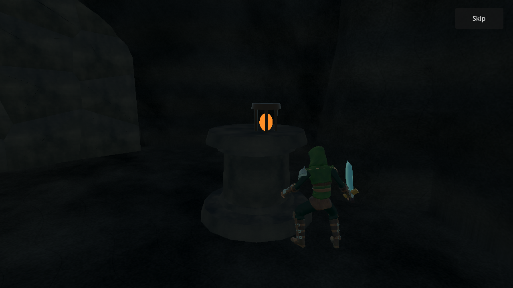
03 stone descending
Approved Phase 6.2 Current safe candidate
Current safe candidate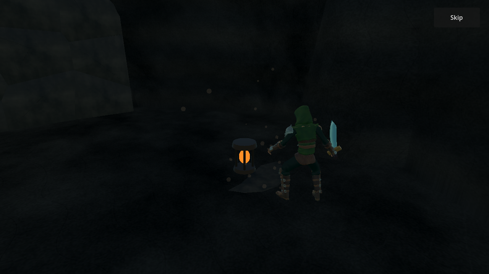
04 spreading cracks
Approved Phase 6.2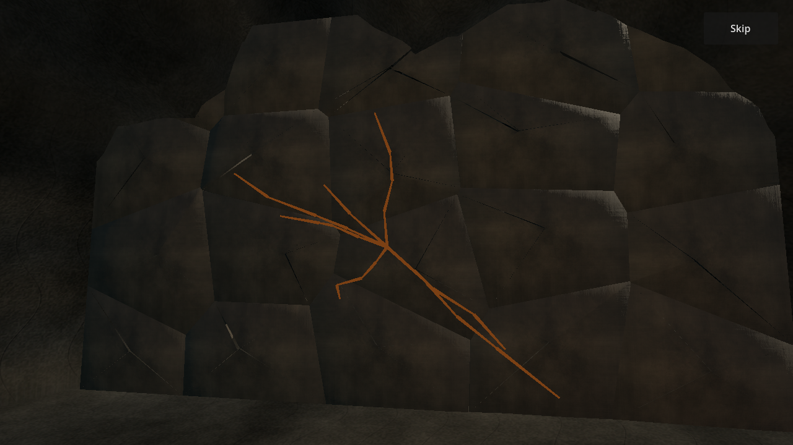
Current safe candidate
05 wall fracture
Approved Phase 6.2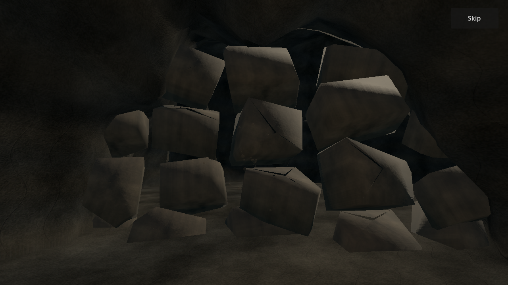
Current safe candidate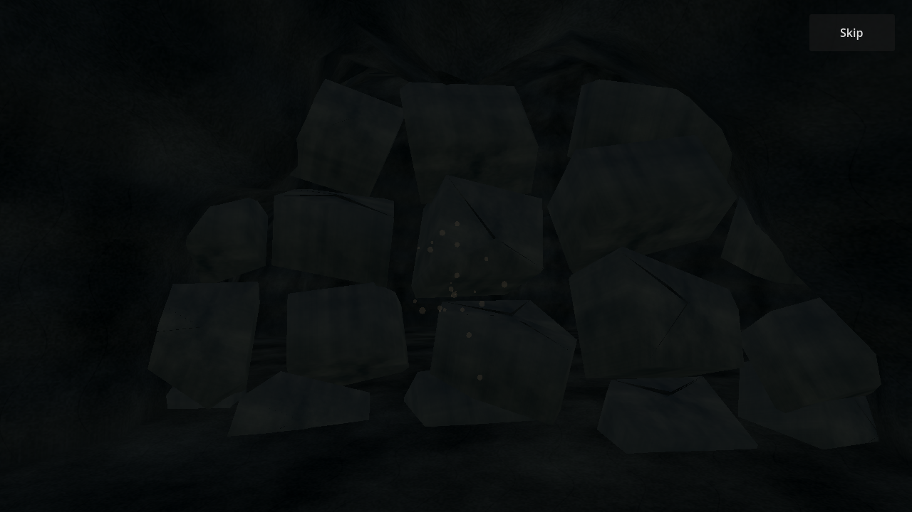
06 passage camera
Approved Phase 6.2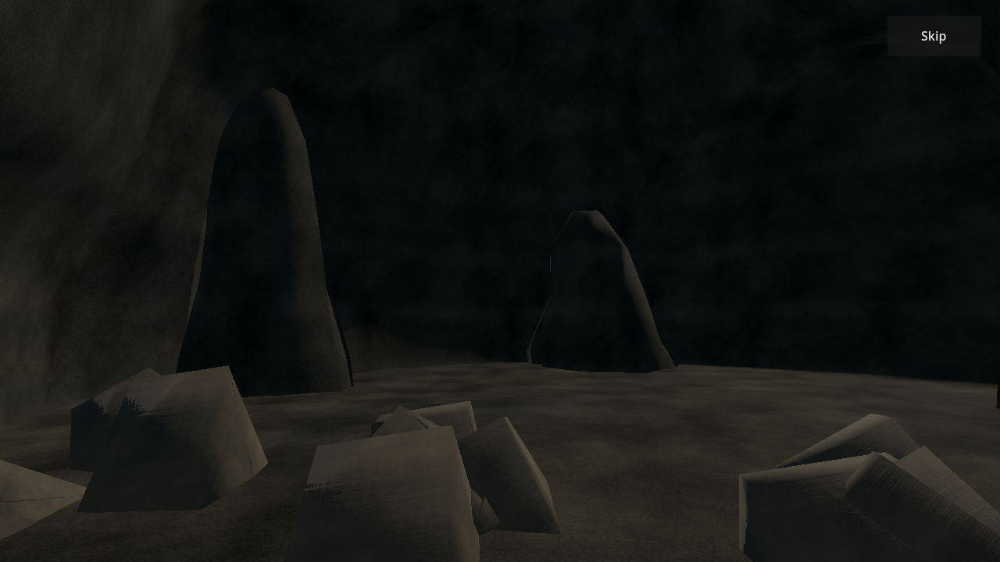
Current safe candidate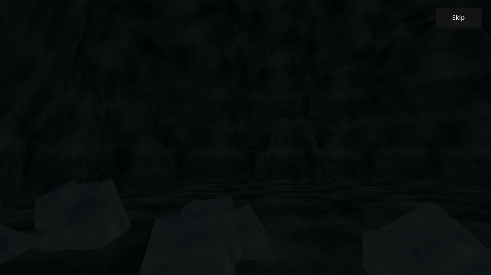
10 crimson eye
Approved Phase 6.2 Current safe candidate
Current safe candidate
12 hero control returned
Approved Phase 6.2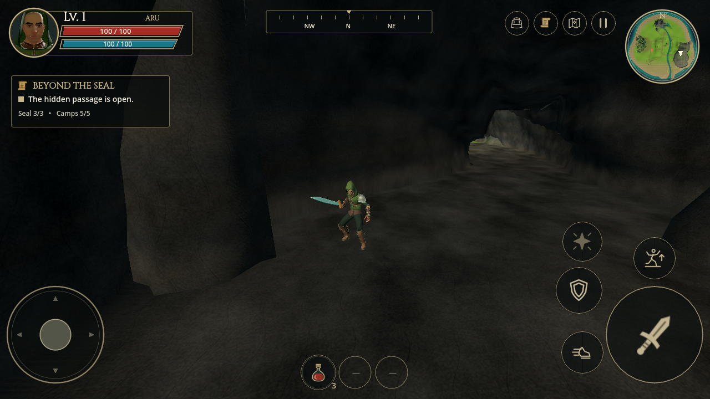
Current safe candidate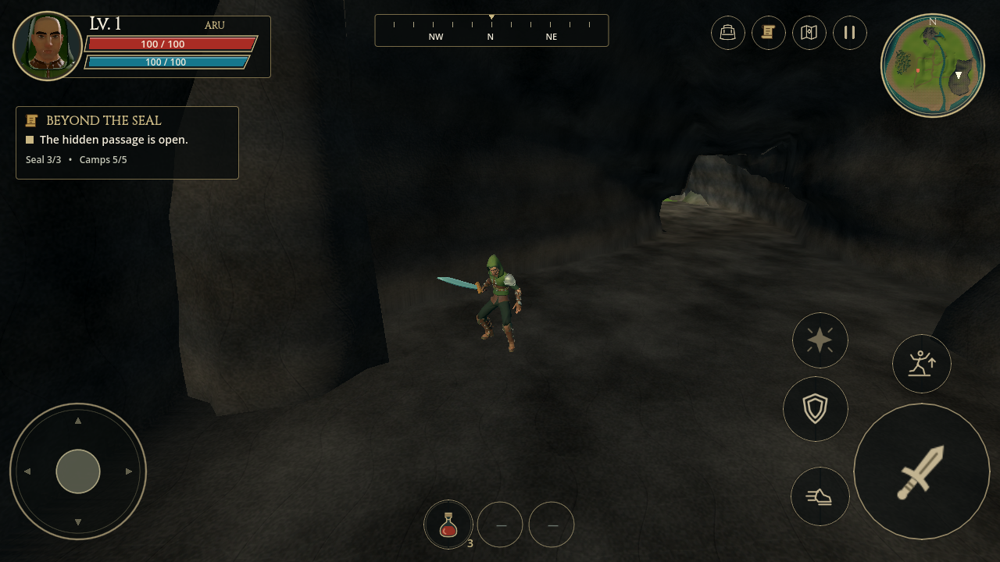
01 interact gameplay
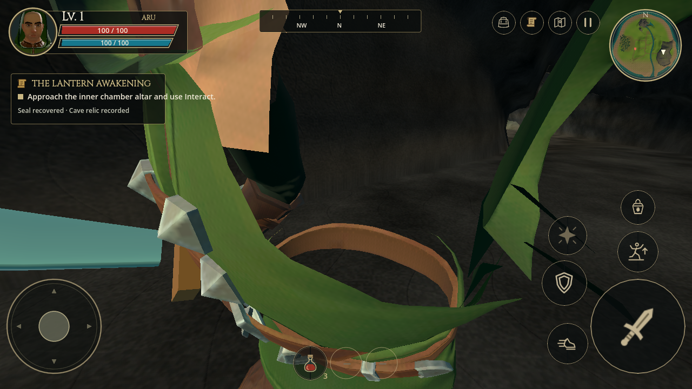
07 deep hall

08 complete darkness

09 eye opening

11 black fade

13 journal completed
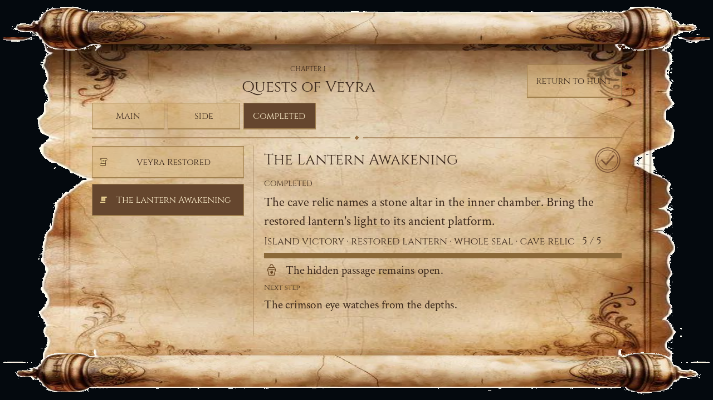
after pedestal
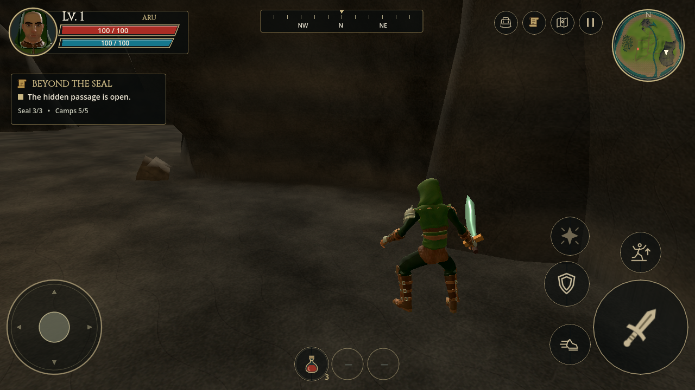
after wall

before pedestal